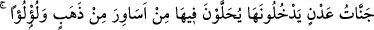

azîm” demek, zikirde cem ettiği gibi fazîlet ve makamda da zâlimi sâbık ile cem etmek
demektir ki bu münasip değildir.
33. (Onların mükâfatı), içine girecekleri Adn cennetleridir. Orada altın bilezikler
ve incilerle süslenirler. Orada giyecekleri elbiseleri de ipektir.
“(Onların mükâfatı), içine girecekleri Adn cennetleridir.”
“Adn”, istikrar ve yerleşme mânâsındadır. Bu mânâda cevherlerin bulunduğu yere de
maden denilir. Yâni göç ve intikal olmaksızın istikrar, sebat ve ikamet bağlarıdır. Zira
bu cennetlerden göç etmeye sebep yoktur. Her ne kadar diğer iki fırkanın mutlak olarak
cennetten mahrumiyetlerine delâlet etmese de burada yalnız sâbıkların halinden ve
onlara dâir güzelliklerden bahsedip diğer iki fırkanın hal ve durumlarından
bahsedilmemesi, bu iki fırkayı kusur ve noksanlıklarından sakındırmak ve onları
sâbıkların hallerini idrâk etme noktasında çalışmaya teşvik etmek içindir.
Bazıları der ki burada üç sınıftan murâd edilen kâfir, münâfık ve mümindir. Yahut
birincisi soldakiler (ashâb-ı meş’eme) ve ikincisi ise sağdakiler (ashâb-ı
meymene)’dir. “(Hayırda) önde olanlar, (ecirde de) öndedirler.” (el-Vâkıa 56/8-10)
kavl-i ilâhisiyle murad edilenlerdir. Yahut birincisi münâfıklar, ikincisi güzellikle hakka
tâbi olanlar ve üçüncüsü Peygamberin (s.a.) ashabıdır. Yahut birincisi kitabı kendisine
arkadan, ikincisi soldan ve üçüncüsü sağdan verilenlerdir. Bu görüşlere göre zâlim,
mümin olmadığı için cennete giremez. Bu sözün sahibi buradaki seçilmiş olmayı hilkat
ve yaradılış bakımından bir de kendilerine peygamber gönderilmesi ve kitap indirilmesi
bakımından değerlendirmiştir. Ancak birinci yorum, Keşfü’l-esrâr’da ifâde edildiği
gibi, daha doğrudur. İlim ehli de genel olarak bu kanaattedir.
Ebü’l-Leys der ki, bu âyetin başının ve sonunun tefsirinde bu üç sınıfın da mümin
olduğuna delil vardır. Âyetin başı “Sonra Kitab’ı, kullarımız arasından seçtiklerimize
verdik” kavlidir. Allah Teâlâ burada kitabı bu üç sınıfa verdiğini haber vermektedir.
Âyetin sonu ise “(Onların mükâfâtı), içine girecekleri Adn cennetleridir” sözüdür.
Allah Teâlâ burada tesniye sığasıyla “ (bu iki sınıf cennete girer) buyurmamış
cemi sıgasıyla “ (bunların hepsi cennete girerler) buyurmuştur.
Kâ’bü’l-Ahbâr’dan rivayet edildiğine göre kendisine neden peygamberin huzurunda
Müslüman olmadın? diye sorulunca o şöyle dedi: “Bir kaç evrak (sahife) hariç babam
bana Tevrat’ın tamamını okuma imkanı verdi. Ancak o bir kaç sayfayı okumamı
engelledi. Bir gün babam bir ihtiyaç için dışarı çıkınca ben o sayfalara baktım ve orada
Muhammed (s.a.)’in niteliklerini ve Allah Teâlâ’nın kıyâmette onları üç sınıf yapacağını